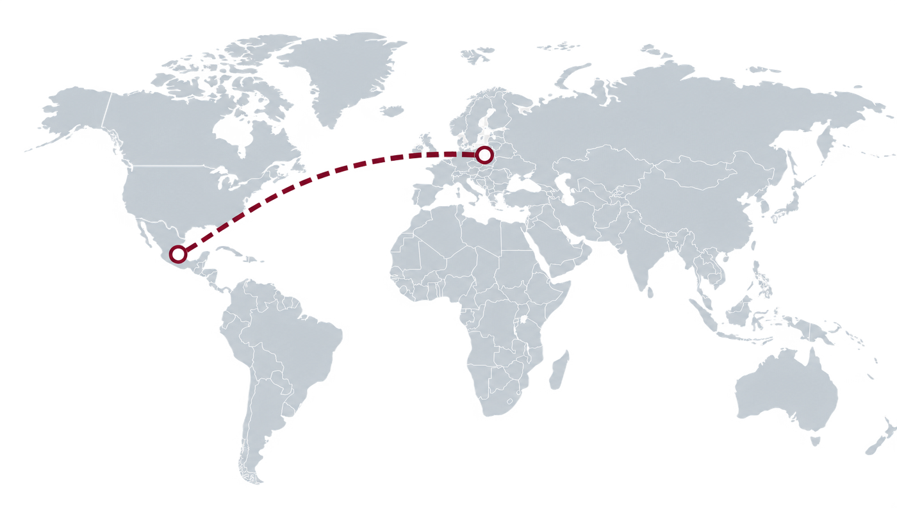

Tym właśnie zajmuje się Grupo ERVOY.
Dobry produkt to dopiero początek. Trzeba jeszcze znać lokalne przepisy, dobrze przygotować import, poprawnie sklasyfikować towar i mieć na miejscu kogoś, kto zna rynek i potrafi na nim działać.
Prowadzimy europejskich producentów przez cały ten proces — od wymagań regulacyjnych i NOM, przez klasyfikację taryfową i import, po przedstawicielstwo i wsparcie sprzedaży na miejscu.
Równolegle rozwijamy w Meksyku własne marki — na tym samym doświadczeniu, kontaktach i zapleczu.
W czym możemy Tobie pomóc
Wymagania regulacyjne i NOM
Sprawdzamy, czy produkt podlega Norma Oficial Mexicana i co oznacza jej spełnienie.
Klasyfikacja taryfowa (HS)
Ustalamy kod, pod którym produkt wchodzi na rynek — od niego zależą cła i pozwolenia.
Import i odprawa celna
Koordynujemy logistykę i procedurę celną.
Etykietowanie i dokumentacja
Przygotowujemy etykiety i dokumenty wymagane w Meksyku.
Przedstawicielstwo handlowe
Rola oficjalnego przedstawiciela wobec klientów i partnerów w Meksyku.
Szukanie dystrybutorów i klientów
Otwieramy i obsługujemy lokalne kanały sprzedaży.
Nasze marki

Simple Made Blinds Mexico
Produkcja i montaż żaluzji oraz rolet dla meksykańskiego rynku mieszkaniowego i inwestycyjnego.
smbmx.com
Polaca Foods
Produkty spożywcze z Europy Środkowej dla meksykańskiego handlu i gastronomii — w ramach jednego kanału importowego.
polacafoods.latNajczęstsze pytania
Czym jest NOM i kiedy obowiązuje?
Normas Oficiales Mexicanas to obowiązkowe wymagania dotyczące bezpieczeństwa, etykietowania lub parametrów, które część produktów musi spełnić przed wprowadzeniem do obrotu w Meksyku. Sprawdzamy, czy dotyczą Twojego produktu.
Czy muszę mieć spółkę w Meksyku, żeby tam sprzedawać?
Nie zawsze. Można działać przez importera albo lokalne przedstawicielstwo; możemy też fakturować i reprezentować produkt handlowo w Meksyku.
Dlaczego klasyfikacja taryfowa jest ważna?
Kod taryfowy przesądza o cłach, pozwoleniach i wymaganiach dla produktu. Błędna klasyfikacja to koszty i opóźnienia na granicy.
Z jakimi produktami pracujecie?
Z dobrami konsumpcyjnymi i przemysłowymi od producentów z Europy. Nasze własne marki działają w branży osłon okiennych i w żywności.
Jak zaczynamy?
Napisz, co produkujesz i na jaki rynek chcesz trafić. Od tego zaczynamy: przegląd wymagań, klasyfikacja i wybór najsensowniejszej drogi wejścia.